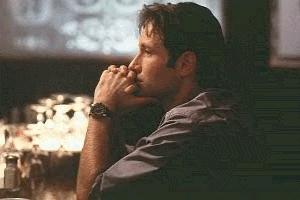
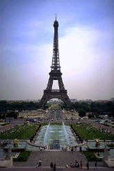
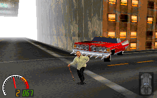
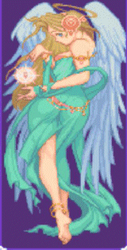
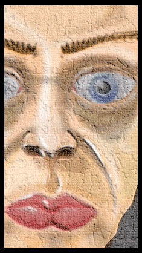

Les Jeux du Speccy Francais
Les Jeux du Speccy Francais
| Get out your berets, garlic and onions and don your striped T-shirts: we're going to have a bit of a wonder about potential Gaelic classics that might have been if only the programmers still coded for the Spectrum. Monsieurs and madames, here we go… | |
|
Strap up your seatbelts and twirl your moustaches as we ponder the possible worlds of French games that might only have been. But before we do, there may be some of you reading who wonder what' s so special about the games produced by those loveable Gaelic coders. Well, where to begin… anyone out there know Another World? French. Flashback? French. Little Big Adventure? French. Heart of Darkness? French. Alone in the Dark? French. Timegate? French. Rayman? French again. Spotted the recurring theme? Is it:
A) They all begin with the letter "z". B) They all star a bloke called "Jean-Luc". C) They're all a bit odd. D) They all came in bright navy boxes. |
|
|  | Well, the answer was "C", because all those games posses that certain something, call in the je ne sais quoi, but they all have their own charm in a way that only the Japanese can rival. It's the way they only just fit into the most bizarre corners of the English psyche so that they don't go completely over our heads, yet they don't fit neatly into our reference of "reality". We could get onto the subjective nature of reality, but that's not really why we're here (watch The Matrix for thoughts on that and some excellent special effects). All the afore-mentioned games will not soon be forgotten by anyone who has played them; their quirky appeal irrevocably lodges itself inside the very soul of the player. We sit there playing, periodically exclaiming: "Wha?" and playing some more, equally spurred on by the exquisite gameplay as the quickly-evaporating hope that we might, somehow, possibly, get an inkling of just what the heck is going on. Of course, we don't, but like Twin Peaks, The X-Files and Countdown, it provides a powerful motivational force. |
| So what would have happened if they had kept coding for the Speccy? What Gaelic gems would we have cherished like our own souls? Well, I like to think that it would have gone something like this… |  |
|
Advanced Road-Crossing Simulator It would have happened eventually. Using a similar view as the classic Advanced Lawnmower Simulator, the player would be presented with a Parisian road. Flowing down this road, like a river, would be a constant, unbroken stream of cars. Occasionally, the traffic lights would go red, creating the odd gap. When the screen opened, a sample (in a French accent) would exclaim: "Ready, Zet, Go!", and the player would have to time a gap in the traffic for their little character, Bob, waiting patiently on one side of the road. At the press of a button, he would start to run across the stream of cars, mopeds, vans and lorries. If he were squished, it would be game over; if he survived, he would get a Nutella crepe. Given that the player would almost certainly never be able to cross successfully, the lifespan potential for this game is tremendous. |
 |
|
P-Rally A driving game set in the middle of futuristic cyberpunk Paris which puts you in the shoes of Bob, orange-haired rally driver extraordinaire. Of course, the lack of road markings and anything resembling a highway code would make the game impossible for any player who was not French, but it would be a laugh. Like really driving in Paris, but without the large death count. |
|
|
Tall Short Escapade An action RPG classic in the making! Controlling your Ballysnicker, Bob, you traverse the length and breadth of your home planet, RoundGlobe, in search of the magic items that will defeat the evil dictator, Crankytooth. During the adventure, you would converse with Hantaloops (red Hamster-type creatures), Garnytoofs (pink giraffe-type creatures) and Kipatoots (blue tortoise-type creatures). The control system is intuitive, yet curiously unwieldy. You take damage if you run into walls, and get caught in energy-sapping cycles aka Jet Set Willy's death loops, but the overall bouncy atmosphere, funky friends with the hammiest voice-overs you have EVER heard and the most desperate urge you've ever had to understand what's happening keep you going. |
|
|  |
Falls the Night Your character (Bob) is mysteriously sucked into another dimension after a freak accident/discovering and alien conspiracy/having his pet gerbil, Boris, kidnapped. Although the controls allow you to run, jump and fire in all eight directions, it doesn't all respond fast enough to make it totally arcadey, and the die-if-don't-do-this gameplay is funnily reminiscent of Dragon's Lair. Upon extended playing, you develop the patience of God Himself as Bob dies every other minute and you try and work out what the programmers want you to do and how you should do it. Given that they're French, this isn't particularly easy. But there are some stunning set pieces, and somehow the whole thing feels more "real" than other, better-flowing games. |
|
Dark Portal Bob, normal bloke with curiously right-angled features finds himself trying to break a curse of ancient evil/rescue a small girl/travel through time to get his girlfriend back. In every case, the player views Bob through a variety of camera angels designed to make you strain and peek and guess to do what you need to do. A variety of items are picked up; quite logically, putting the fish in the toilet opens the small grate invisible given the angle and the bag of flour actually explodes on looking at it. Bob also takes your commands under advisement, carefully considering if he should actually do what you tell him to or not before finally deciding to trust you… this time. A variety of undead baddies laugh as they perforate you from a variety of positions which render them invisible or untouchable depending on the angle of camera. Yet the camera creates an unrivalled sense of drama, atmosphere and "being there", and you're determined to sort these evil-types out and return the world to it's proper order and just… get… past… this… section. Phew. Arg (dies again). |
 |
| Sigh. If only, eh, readers? Well, if your heart is breaking with the possibilities, you could always try some classics on your humble PC/Megadrive/SNES/Playstation, such as Alone in the Dark, Another World and the supremely odd Little Big Adventure. But they're not on the Speccy, and they never will be. The patience and extended consciousness of an entire generation of gamers will have to be birthed elsewhere… let's hope that other software houses are up to the challenge. |